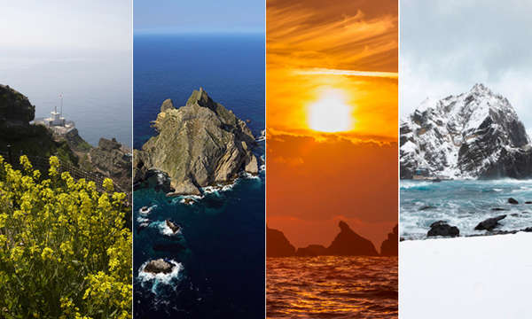

태고의 신비를 간직하고 있는 독도의 자연을 소개해 드립니다.
대한민국의 아름다운 섬, 독도

독도에 대한 간략한 소개
독도는 대한민국의 가장 동쪽에 위치한 섬이다. 총 2개의 섬과 89개의 바위로 이루어져 있으며, 이 섬은 화산 활동으로 인해 형성된 것으로 알려져 있다.
역사적으로 독도는 대한민국의 고유 영토로 인정되어 왔다. 이미 고려시대부터 우리나라의 영토로 기록되어 왔으며, 조선시대에는 울릉도와 함께 관리되었다.
오늘날 독도는 대한민국의 영토로 공인되고 있으며, 정부와 국민들이 이를 수호하기 위해 노력하고 있다. 독도는 대한민국의 영토 주권과 영토 완전성을 상징하는 중요한 장소이다.
